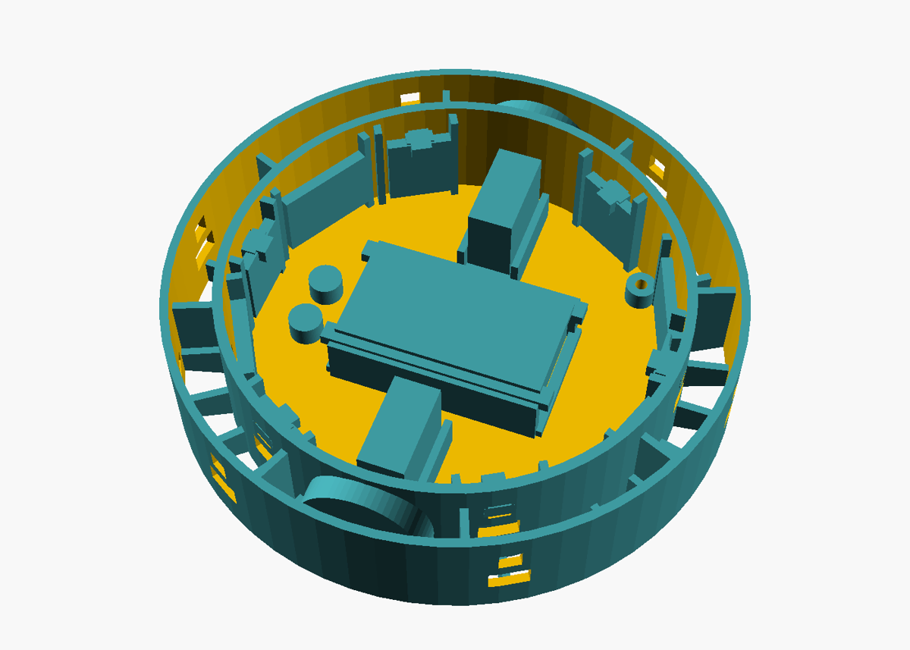
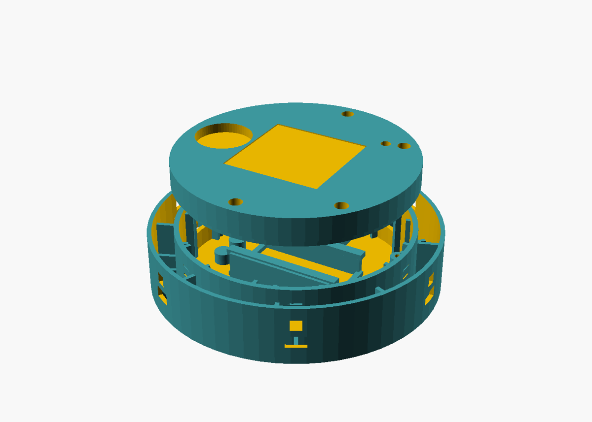
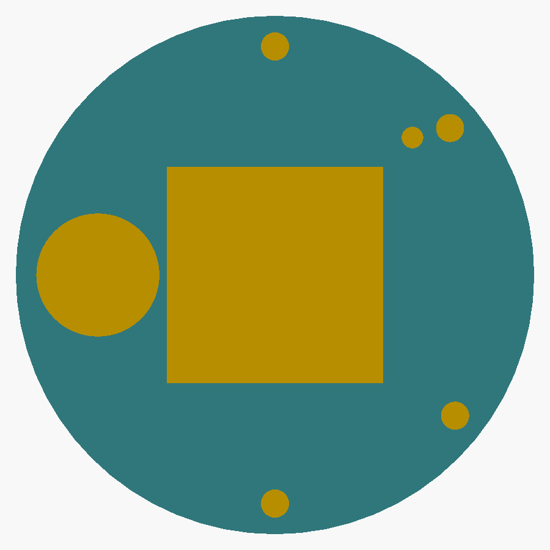

How it works
Six VL53L0X sensors sit every 60° around the rim, behind windows in the wall, each reading the distance in its own sector. The firmware adds the six readings into a repulsive vector — a sensor that sees something close pushes the puck the other way, harder the closer it is — and steers the differential drive along it. Below a critical distance (7 cm) a hard override takes over and reverses at full power for a fraction of a second, whatever the proportional layer says.
Above each sensor sits a WS2812B pixel that goes from green to red with proximity, and a small I2S speaker plays a clean sine wave whose pitch and volume rise as the nearest obstacle gets closer. Sound is synthesised in its own task on the second ESP32 core, so it stays smooth even though a full sensor sweep takes tens of milliseconds.



Parts (one puck)
Specific products from Botland; the quantities are per puck. Prices change — check on the product page.
| Part | Product | Qty |
|---|---|---|
| Motors | Micro motor N20-BT41 100:1, 150 RPM, 6 V | 2 |
| Wheels | Pololu Wheel 32×7 mm (pair) | 1 |
| Caster | Pololu Ball Caster 3/8″ | 1 |
| Motor driver | TB6612FNG carrier, Pololu #713 | 1 |
| MCU | ESP32-DevKitC-32E | 1 |
| Distance sensors | VL53L0X, Pololu #2490 | 6 |
| I2C multiplexer | TCA9548A, Adafruit #2717 | 1 |
| Proximity LEDs | WS2812B pixel module | 7 |
| Audio | MAX98357A I2S amp + YD27 speaker 27 mm | 1 + 1 |
| Battery + charger | Akyga Li-Pol 1000 mAh + TP4056 | 1 + 1 |
Printing
PETG, because the pucks will collide. Base flat side down; the wheel skirt is held up by ramp-shaped ribs every 12°, so it prints without supports except locally in the wheel sectors. Lid upside down. Measure your modules before printing: the OpenSCAD model has the typical datasheet sizes marked [ZMIERZ] (“measure”), and cheap modules vary. Export STL from cad/puck_enclosure.scad by setting MODE to base, lid or wheel.
Status
Work in progress: the CAD model and obstacle-avoidance firmware (ESP32, Arduino-ESP32 2.x/3.x) are done; WiFi/MQTT, camera tracking and the visualisation are planned, not implemented. The package includes a verification report with open items to check before printing a full set.
Jak to działa
Sześć czujników VL53L0X siedzi co 60° na obwodzie, za oknami w ściance, i każdy mierzy odległość w swoim sektorze. Firmware sumuje sześć odczytów w wektor odpychania — czujnik, który widzi coś blisko, popycha krążek w przeciwną stronę, tym mocniej, im bliżej — i kieruje napędem różnicowym wzdłuż niego. Poniżej dystansu krytycznego (7 cm) przejmuje twardy override: pełna moc wstecz na ułamek sekundy, niezależnie od warstwy proporcjonalnej.
Nad każdym czujnikiem jest piksel WS2812B, który z bliskością przechodzi z zieleni w czerwień, a mały głośnik I2S gra czysty sinus, którego wysokość i głośność rosną, im bliżej najbliższa przeszkoda. Dźwięk jest syntezowany w osobnym zadaniu na drugim rdzeniu ESP32, więc jest płynny, choć pełny przegląd czujników trwa dziesiątki milisekund.
Części (jeden krążek)
Konkretne produkty z Botlandu — tabela w wersji angielskiej powyżej zawiera linki (ilości na jeden krążek): 2 silniki N20-BT41, koła Pololu 32×7, kółko Pololu 950, sterownik TB6612FNG (Pololu #713), ESP32-DevKitC-32E, 6× VL53L0X, multiplekser TCA9548A, 7 pikseli WS2812B, wzmacniacz MAX98357A + głośnik YD27, akumulator 1000 mAh + ładowarka TP4056. Ceny się zmieniają — sprawdź na stronie produktu.
Druk
PETG, bo krążki będą się zderzać. Base dnem do stołu; spódnica kół jest podparta żebrami-rampami co 12°, więc drukuje się bez podpór poza sektorami kół. Lid do góry nogami. Przed drukiem zmierz moduły: model OpenSCAD ma typowe wymiary z kart katalogowych oznaczone [ZMIERZ], a tanie moduły mają odchyłki. STL wyeksportujesz z cad/puck_enclosure.scad, ustawiając MODE na base, lid lub wheel.
Status
Praca w toku: model CAD i firmware unikania przeszkód (ESP32, Arduino-ESP32 2.x/3.x) są gotowe; WiFi/MQTT, śledzenie kamerą i wizualizacja są zaplanowane, nie zaimplementowane. W paczce jest raport weryfikacji z punktami do sprawdzenia przed drukiem całej serii.